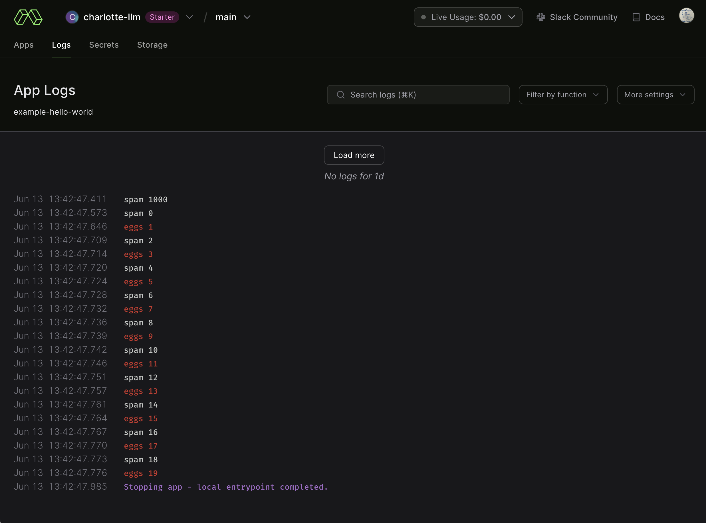
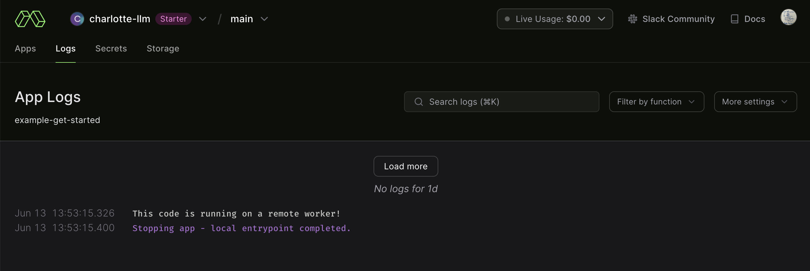
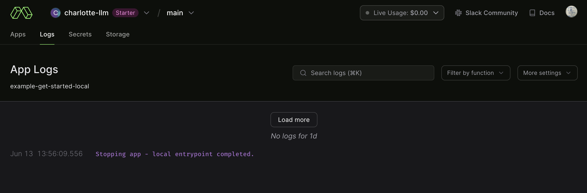

Modal Examples
01_getting_started
This is a Quarto book on notes on running Modal examples.
This is meant as a personal reference and not an official guide on Modal.
All credit should be given to the Modal team for a wonderful tool and example setup.
Let’s first setup our environment locally.
0.1 Clone repo
git clone https://github.com/modal-labs/modal-examples.git0.2 Modal setup
$ modal setup
The web browser should have opened for you to authenticate and get an API token.
If it didn't, please copy this URL into your web browser manually:
https://modal.com/token-flow/tf-xxxxxxxxxxx
Web authentication finished successfully!
Token is connected to the charlotte-llm workspace.
Verifying token against https://api.modal.com
Token verified successfully!
Token written to /Users/ryan/.modal.toml in profile charlotte-llm.1 hello_world.py
Now we’ll start with this file:
hello_world.py
import sys
import modal
app = modal.App("example-hello-world")
@app.function()
def f(i):
if i % 2 == 0:
print("hello", i)
else:
print("world", i, file=sys.stderr)
return i * i
@app.local_entrypoint()
def main():
# run the function locally
print(f.local(1000))
# run the function remotely on Modal
print(f.remote(1000))
# run the function in parallel and remotely on Modal
total = 0
for ret in f.map(range(20)):
total += ret
print(total)1.1 Running our function locally, remotely, and in parallel
Three different ways we can call that function:
- As a regular
localcall on your computer, withf.local - As a
remotecall that runs in the cloud, withf.remote - By
mapping many copies offin the cloud over many inputs, withf.map
$ cd 01_getting_started
$ modal run hello_world.py
✓ Initialized. View run at https://modal.com/charlotte-llm/main/apps/ap-xxxxxxxxx
✓ Created objects.
├── 🔨 Created mount /modal-examples/01_getting_started/hello_world.py
└── 🔨 Created function f.
hello 1000
1000000
1000000
hello 1000
hello 0
world 1
hello 2
world 3
hello 4
world 5
hello 6
world 7
hello 8
world 9
hello 10
world 11
hello 12
world 13
hello 14
world 15
hello 16
world 17
hello 18
world 19
2470
Stopping app - local entrypoint completed.
✓ App completed. View run at https://modal.com/charlotte-llm/main/apps/ap-xxxxxxxxx1.1.1 What just happened?
When we called .remote on f, the function was executed in the cloud, on Modal’s infrastructure, not locally on our computer.
In short, we took the function f, put it inside a container, sent it the inputs, and streamed back the logs and outputs.
1.1.2 But why does this matter?
Try doing one of these things next to start seeing the full power of Modal!
1.1.3 Change the code
I’ll change the print to “spam” and “eggs”:
hello_world_spam.py
import sys
import modal
app = modal.App("example-hello-world")
@app.function()
def f(i):
if i % 2 == 0:
print("spam", i)
else:
print("eggs", i, file=sys.stderr)
return i * i
@app.local_entrypoint()
def main():
# run the function locally
print(f.local(1000))
# run the function remotely on Modal
print(f.remote(1000))
# run the function in parallel and remotely on Modal
total = 0
for ret in f.map(range(20)):
total += ret
print(total)Then run:
$ modal run hello_world_spam.py
✓ Initialized. View run at https://modal.com/charlotte-llm/main/apps/ap-xxxxxxxxx
✓ Created objects.
├── 🔨 Created mount /modal-examples/01_getting_started/hello_world_spam.py
└── 🔨 Created function f.
spam 1000
1000000
spam 1000
1000000
spam 0
eggs 1
spam 2
eggs 3
spam 4
eggs 5
spam 6
eggs 7
spam 8
eggs 9
spam 10
eggs 11
spam 12
eggs 13
spam 14
eggs 15
spam 16
eggs 17
spam 18
eggs 19
2470
Stopping app - local entrypoint completed.
✓ App completed. View run at https://modal.com/charlotte-llm/main/apps/ap-xxxxxxxxxI can view the output via browser:

This example is obviously very simple, but there are many other things you can do with modal like:
- Running language model inference or fine-tuning
- Manipulating audio or images
- Collecting financial data to backtest a trading algorithm.
2 get_started.py
Now let’s look at the next file:
get_started.py
import modal
app = modal.App("example-get-started")
@app.function()
def square(x):
print("This code is running on a remote worker!")
return x**2
@app.local_entrypoint()
def main():
print("the square is", square.remote(42))2.1 Decorators
Notice the two different app decorators: @app.function() and @app.local_entrypoint().
local_entrypoint:
> def local_entrypoint(
self, _warn_parentheses_missing=None, *, name: Optional[str] = None
) -> Callable[[Callable[..., Any]], None]:Decorate a function to be used as a CLI entrypoint for a Modal App.
These functions can be used to define code that runs locally to set up the app, and act as an entrypoint to start Modal functions from. Note that regular Modal functions can also be used as CLI entrypoints, but unlike local_entrypoint, those functions are executed remotely directly.
@app.local_entrypoint()
def main():
some_modal_function.remote()You can call the function using modal run directly from the CLI:
modal run app_module.pyNote that an explicit app.run() is not needed, as an app is automatically created for you.
We can run:
$ modal run get_started.py
✓ Initialized. View run at https://modal.com/charlotte-llm/main/apps/ap-xxxxxxxxx
✓ Created objects.
├── 🔨 Created mount /modal-examples/01_getting_started/get_started.py
└── 🔨 Created function square.
the square is 1764
This code is running on a remote worker!
Stopping app - local entrypoint completed.
✓ App completed. View run at https://modal.com/charlotte-llm/main/apps/ap-xxxxxxxxxNow I wonder what happens if I create a similar new file:
get_started_local.py
import modal
app = modal.App("example-get-started-local")
@app.function()
def square(x):
print("This code is running on a local worker!")
return x**2
@app.local_entrypoint()
def main():
print("the square is", square.local(42))And then run:
$ modal run get_started_local.py
✓ Initialized. View run at https://modal.com/charlotte-llm/main/apps/ap-xxxxxxxxxx
✓ Created objects.
├── 🔨 Created mount /modal-examples/01_getting_started/get_started_local.py
└── 🔨 Created function square.
This code is running on a local worker!
the square is 1764
Stopping app - local entrypoint completed.
✓ App completed. View run at https://modal.com/charlotte-llm/main/apps/ap-xxxxxxxxxxVery similar. What happens when we look at the logs:


3 generators.py
We can also glance at how generators vary for remote vs local with:
generators.py
import modal
app = modal.App("example-generators")
@app.function()
def f(i):
for j in range(i):
yield j
@app.local_entrypoint()
def main():
for r in f.remote_gen(10):
print(r)Importing Modal
The script starts by importing the modal module.
Defining the Modal App
The next line creates a Modal application instance, named “example-generators”, using the modal.App constructor.
Defining a Generator Function
The f function is defined as a generator function using the @app.function() decorator. This decorator registers the function with the Modal app, making it available for remote execution.
The f function takes an integer i as input and yields a sequence of numbers from 0 to i-1 using a for loop. The yield statement is used to produce each number in the sequence, rather than computing the entire sequence at once.
Defining a Local Entry Point
The main function is defined as a local entry point using the @app.local_entrypoint() decorator. This decorator marks the function as the entry point for the Modal app, which means it will be executed when the app is run locally.
Remote Execution and Printing
In the main function, the f.remote_gen(10) expression is used to execute the f function remotely with an input of 10. The remote_gen method returns a generator that produces the output of the remote execution.
The for loop iterates over the generator, printing each number in the sequence produced by the remote execution of f.
How it Works
When the script is run, the Modal app is created, and the main function is executed locally. The main function executes the f function remotely with an input of 10, which produces a sequence of numbers from 0 to 9. The generator returned by remote_gen is iterated over, printing each number in the sequence.
Note that the f function is executed remotely, which means it can be executed on a different machine or in a different process, depending on the Modal configuration. This allows for distributed execution and scaling of the application.
Then if we run:
$ modal run generators.py
✓ Initialized. View run at https://modal.com/charlotte-llm/main/apps/ap-xxxxxxxxxx
✓ Created objects.
├── 🔨 Created mount /modal-examples/01_getting_started/generators.py
└── 🔨 Created function f.
0
1
2
3
4
5
6
7
8
9
Stopping app - local entrypoint completed.
✓ App completed. View run at https://modal.com/charlotte-llm/main/apps/ap-xxxxxxxxxx